The Jazz Theory Book by Mark Levine
Chapter 1: Basic Theory
Figure 1-1

Table of Intervals
Ascending minor 2nd
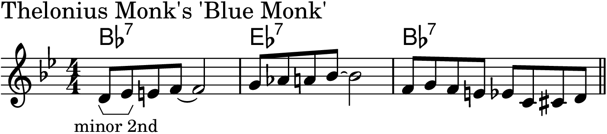
Descending minor 2nd
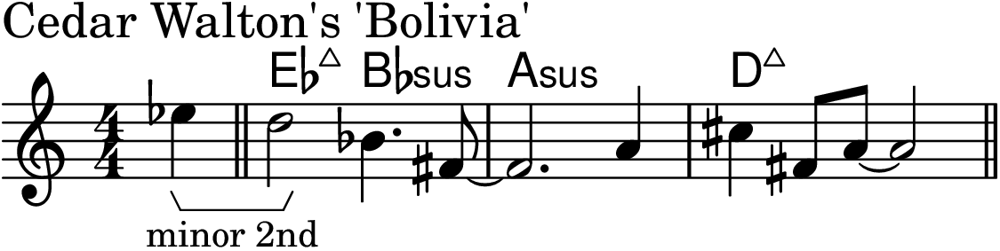
Ascending major 2nd

Descending major 2nd

Ascending minor 3rd

Descending minor 3rd

Ascending major 3rd

Descending major 3rd

Ascending perfect 4th
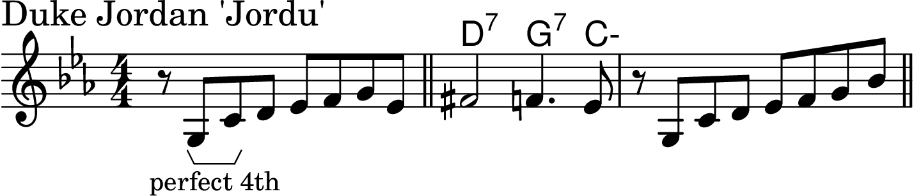
Descending perfect 4th

Ascending tritone

Descending tritone

Ascending perfect 5th

Descending perfect 5th
Ascending minor 6th

Descending minor 6th

Ascending major 6th
Descending major 6th

Ascending minor 7th

Descending minor 7th

Ascending major 7th

Descending major 7th

Ascending octave

Descending octave
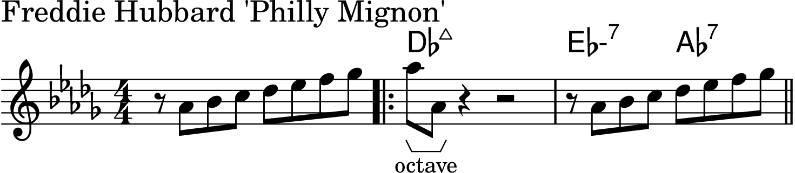
Ascending minor 9th

Descending minor 9th
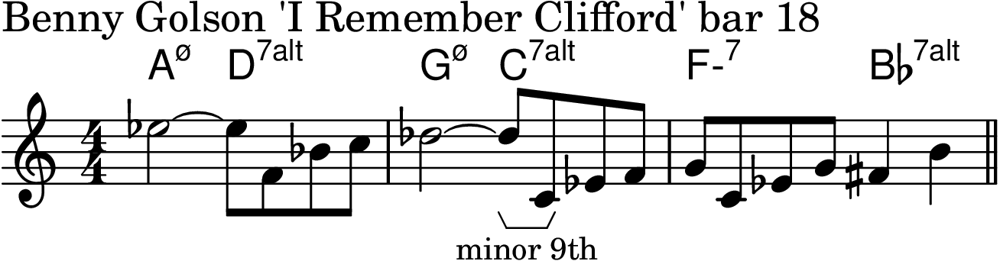
Ascending major 9th
Ascending major 10th

Descending 11th

Descending major 13th
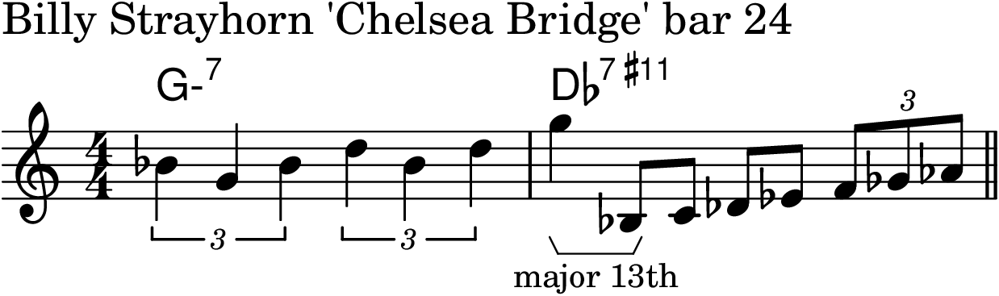
Figure 1-2

Figure 1-3

Figure 1-4

Figure 1-5

Figure 1-6
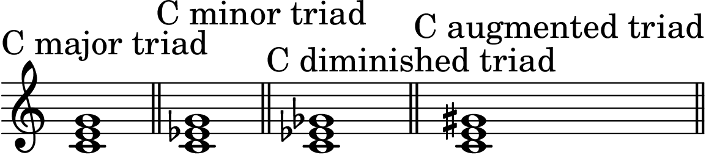
Figure 1-7

Chapter 2: The Major Scale and the II-V-I Progression
Figure 2-1
Figure 2-2

Figure 2-3

Figure 2-4

Figure 2-5

Figure 2-6

Figure 2-7

Figure 2-8
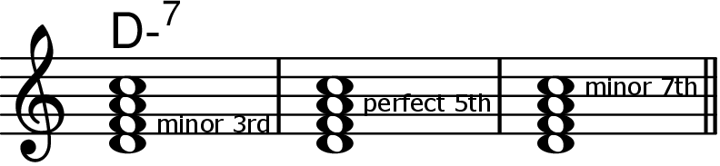
Figure 2-9

Figure 2-10
Figure 2-11
Figure 2-12

Figure 2-13

Figure 2-14

Figure 2-15

Figure 2-16

Figure 2-17

Figure 2-18
Figure 2-19

Figure 2-21

Figure 2-22

Figure 2-23

Figure 2-24

Figure 2-25
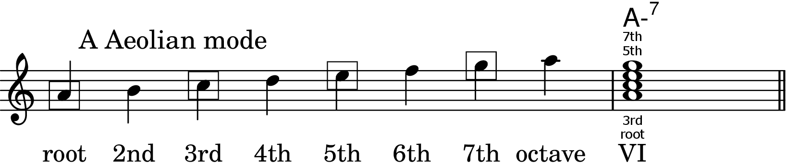
Figure 2-26
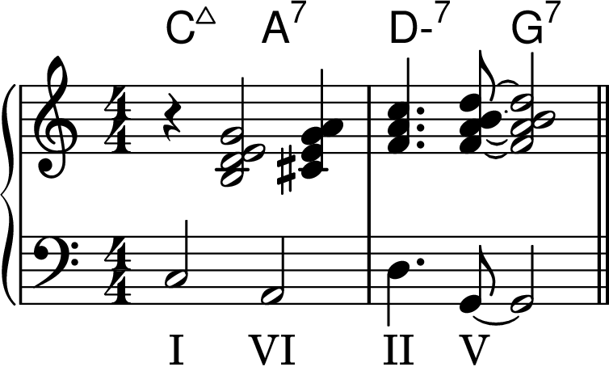
Figure 2-27

Figure 2-28

Figure 2-29

Figure 2-30

Figure 2-31
Figure 2-32
Figure 2-33

Figure 2-34

Figure 2-35

Figure 2-36

Figure 2-37

Figure 2-38

Chapter 3: Chord/Scale Theory
Figure 3-1
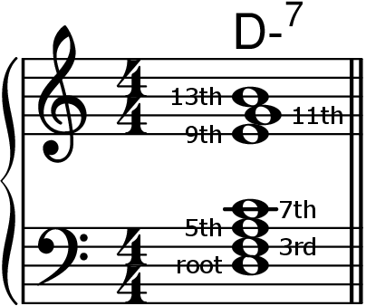
Figure 3-2
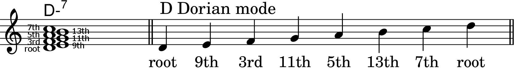
Figure 3-3

Figure 3-4

Figure 3-5
Figure 3-6
Figure 3-7
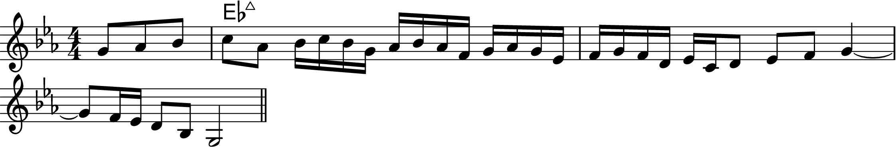
Figure 3-8
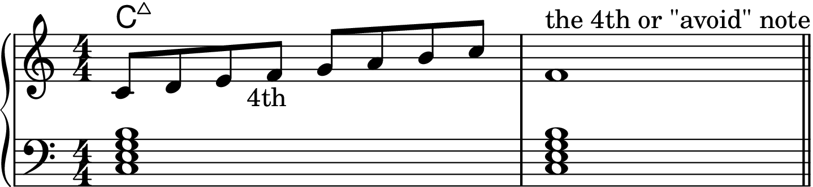
Figure 3-9
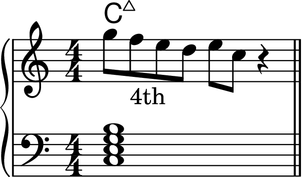
Figure 3-10

Figure 3-11
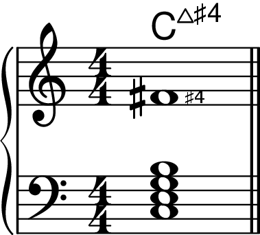
Figure 3-12
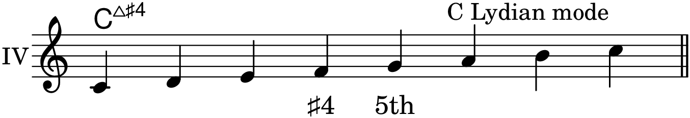
Figure 3-13
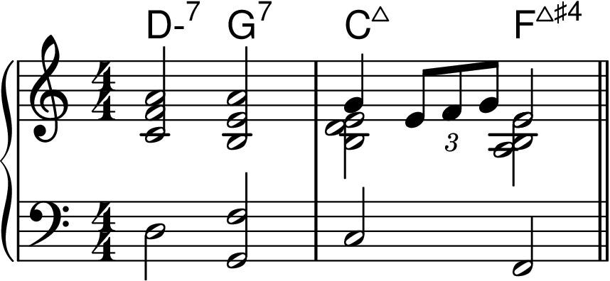
Figure 3-14
Figure 3-15

Figure 3-16
Figure 3-17

Figure 3-18

Figure 3-19
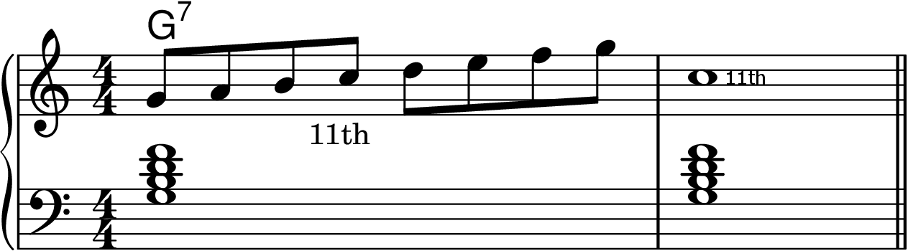
Figure 3-20

Figure 3-21

Figure 3-22

Figure 3-23

Figure 3-24
Figure 3-25

Figure 3-26
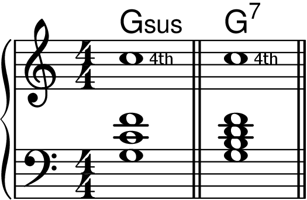
Figure 3-27

Figure 3-28
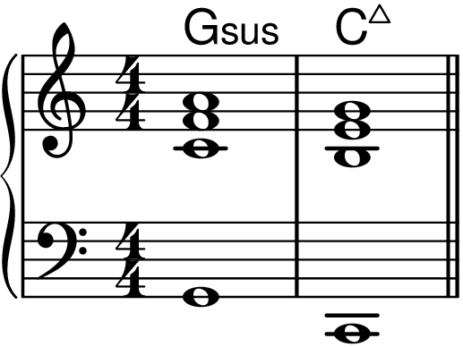
Figure 3-29
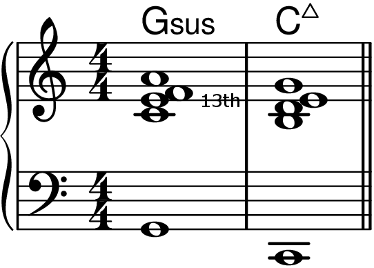
Figure 3-30

Figure 3-31
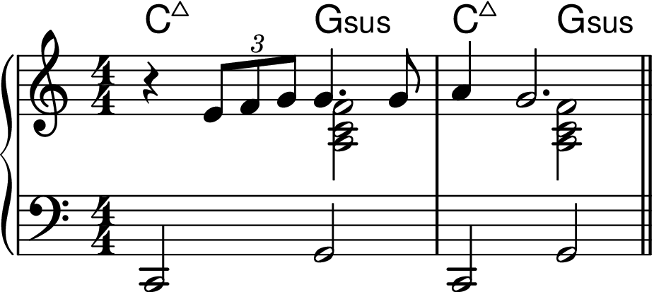
Figure 3-32
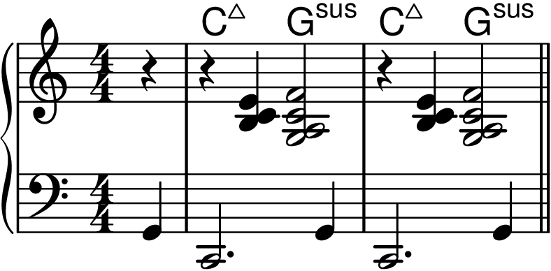
Figure 3-33

Figure 3-34

Figure 3-35
Figure 3-36

Figure 3-37

Figure 3-38
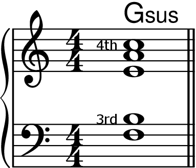
Figure 3-39
Figure 3-40
Figure 3-41
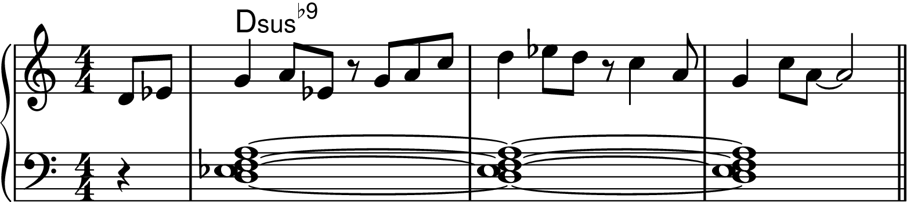
Figure 3-42

Figure 3-43

Figure 3-44
Figure 3-45

Figure 3-46
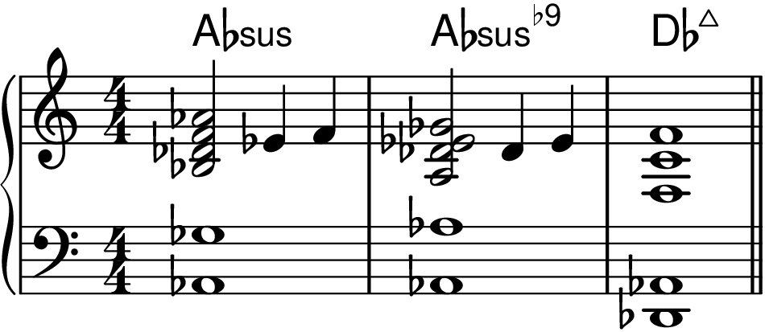
Figure 3-47

Figure 3-48
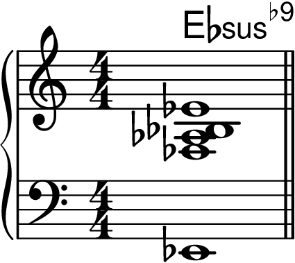
Figure 3-49

Figure 3-50
Figure 3-51
Figure 3-52

Figure 3-53
Figure 3-54
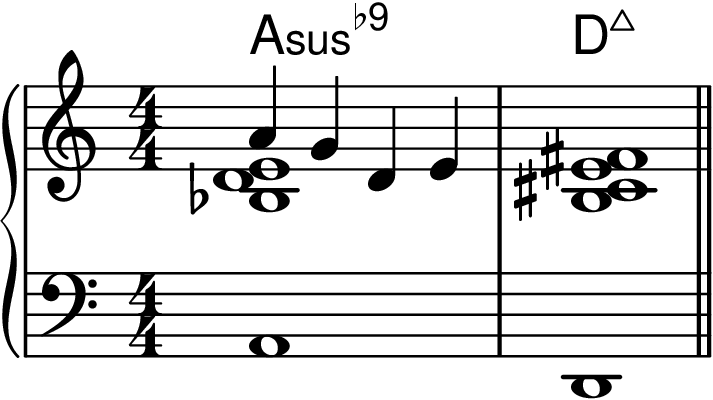
Figure 3-55
Figure 3-56
Figure 3-57

Figure 3-58
Figure 3-59

Figure 3-60

Figure 3-61

Figure 3-62
Figure 3-63
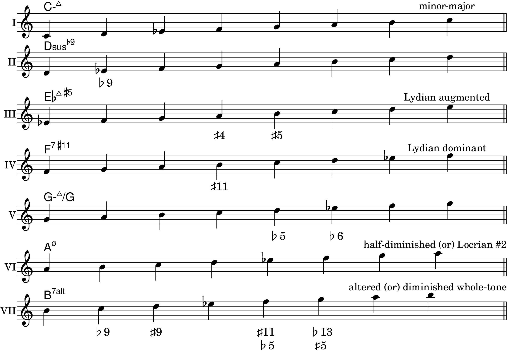
Figure 3-64
Figure 3-65
Figure 3-66a
Figure 3-66b

Figure 3-67
Figure 3-68

Figure 3-69

Figure 3-70
Figure 3-71

Figure 3-72
Figure 3-73

Figure 3-74
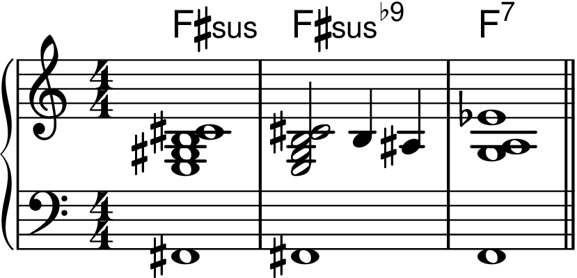
Figure 3-75a

Figure 3-75b

Figure 3-76
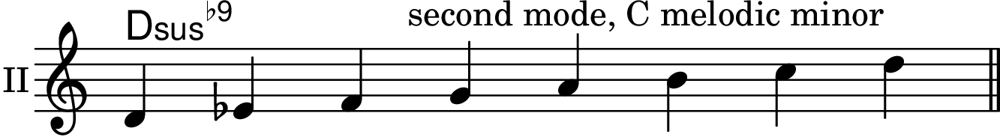
Figure 3-77

Figure 3-78

Figure 3-79
Figure 3-80

Figure 3-81

Figure 3-82
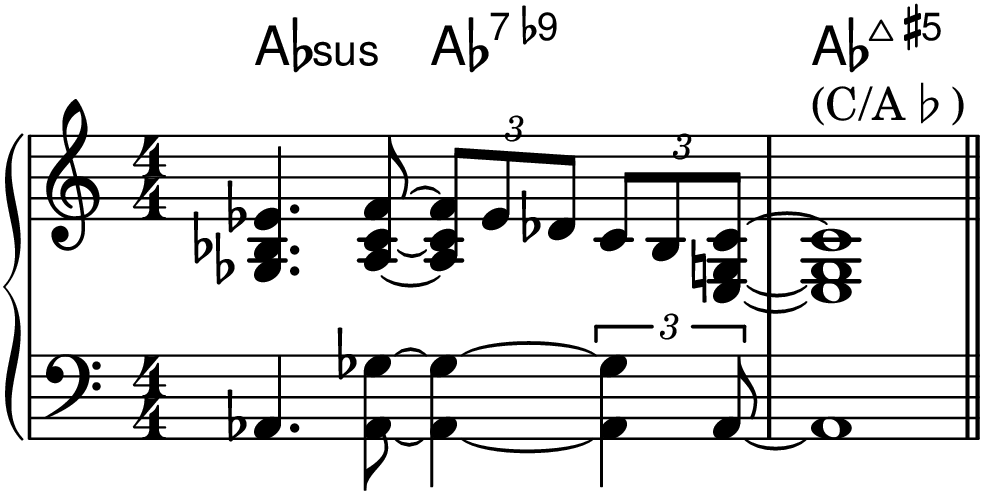
Figure 3-83
Figure 3-84
Figure 3-85

Figure 3-86
Figure 3-87
Figure 3-88

Figure 3-89
Figure 3-90

Figure 3-142
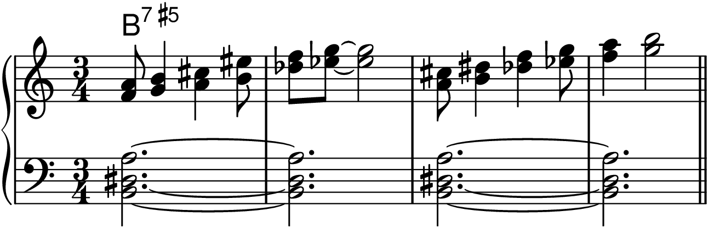
Figure 3-143

Figure 3-144
Figure 3-145
Figure 3-146

Figure 3-147

Figure 3-148
Figure 3-149

Figure 3-150

Figure 3-151
Figure 3-152

Figure 3-153